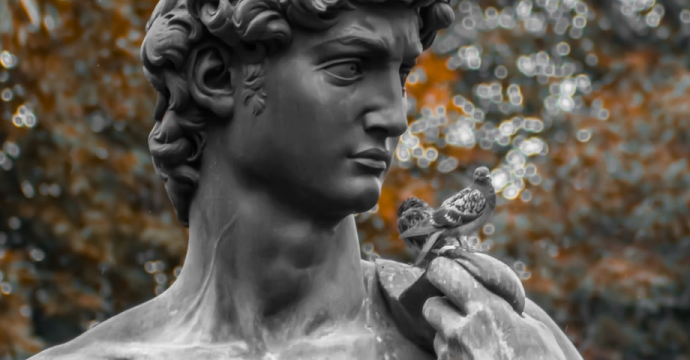
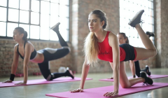

НЕДВИЖИМОСТЬ
29 September 2020 at 10:58
1,5 тыс
11,5 тыс
Требониан Галл происходил из старинного этрусского рода. В конце правления императора Деция Траяна он занимал должность легата
Будущий император Гай Вибий Требониан Галл родился около 206 года. Эта датировка основана на сообщении Псевдо-Аврелия Виктора, который в своей «Эпитоме» пишет, что на момент смерти Гаю было примерно сорок семь лет.
Горячее

СПОРТ
Проглотившая слона змея стала классикой за 2000 лет до «Маленького принца».
1,5 тыс
11,5 тыс
Последние новости
В Сети появился список,
где в Минске устанавливают видеокамеры для наблюдения за улицей